# Load packages
library(vdemdata)
library(tidyverse)
# Create dataset for year 2019, with country name, year, and electoral dem
vdem2019 <- vdem |>
filter(year == 2019) |>
select(
country = country_name,
year,
polyarchy = v2x_polyarchy,
gdppc = e_gdppc,
region = e_regionpol_6C
) |>
mutate(region = case_match(region,
1 ~ "Eastern Europe",
2 ~ "Latin America",
3 ~ "Middle East",
4 ~ "Africa",
5 ~ "The West",
6 ~ "Asia"))Continuous Distributions
June 3, 2026
Continuous Distributions
What is a Continuous Variable?
- A continuous variable can take any value within a range
- Examples: V-Dem Polyarchy (0–1), GDP per capita, income, temperature
- Contrast with discrete (whole-number counts) and categorical (named groups)
- Need tools to describe the distribution of the variable
Describing a Distribution
We characterize distributions along three dimensions:
- Center — where values tend to cluster: mean, median
- Shape — the overall pattern: symmetric, skewed, bimodal
- Spread — how much values vary: range, IQR, standard deviation
Always visualize your data — summary statistics alone can hide the full story!
High-Level V-Dem Measures
- Electoral Democracy (Polyarchy)
- Liberal Democracy
- Egalitarian Democracy
- Participatory Democracy
- Deliberative Democracy
All continuous measures, ranging from 0 to 1. Let’s take a look at how to summarize data like this!
Data Setup
Examine the Data
Rows: 179
Columns: 5
$ country <chr> "Mexico", "Suriname", "Sweden", "Switzerland", "Ghana", "Sou…
$ year <dbl> 2019, 2019, 2019, 2019, 2019, 2019, 2019, 2019, 2019, 2019, …
$ polyarchy <dbl> 0.684, 0.741, 0.899, 0.902, 0.718, 0.727, 0.830, 0.421, 0.25…
$ gdppc <dbl> 34.308, 24.668, 106.746, 109.451, 10.820, 24.104, 88.837, 13…
$ region <chr> "Latin America", "Latin America", "The West", "The West", "A…How can we summarize measures of democracy? 🤔
We could calculate the mean.
The mean is the average of the values. Common measure of central tendency but sensitive to outliers.
How can we summarize measures of democracy? 🤔
We could calculate the median.
The median is the value that separates the higher half from the lower half of the data.
We can also describe the shape of the distribution…
- symmetric (e.g. normal)
- right-skewed
- left-skewed
- unimodal (one peak)
- bimodal (multiple peaks)
Histograms
- Used to represent the distribution of a continuous variable
- The x-axis represents the range of values
- The y-axis represents the frequency of each value
- The bars represent the number of observations in each range or “bin”
- The shape of the histogram can tell us a lot about the distribution of the data
Symmetric Distributions
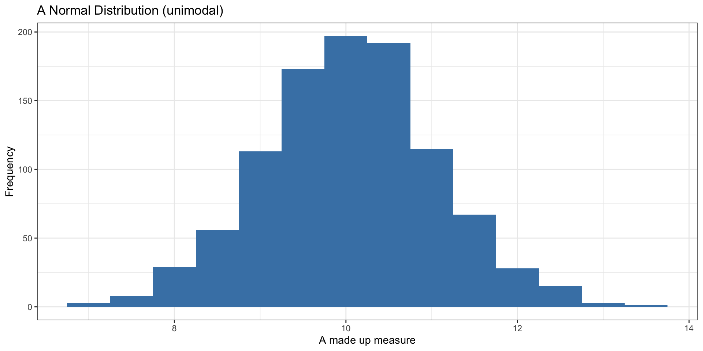
Symmetric Distributions
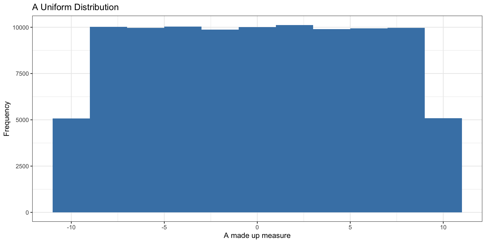
Skewed Distributions
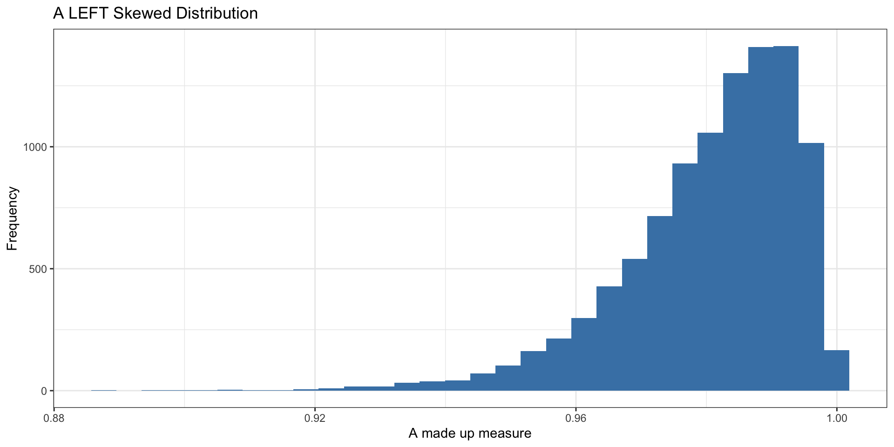
Skewed Distributions
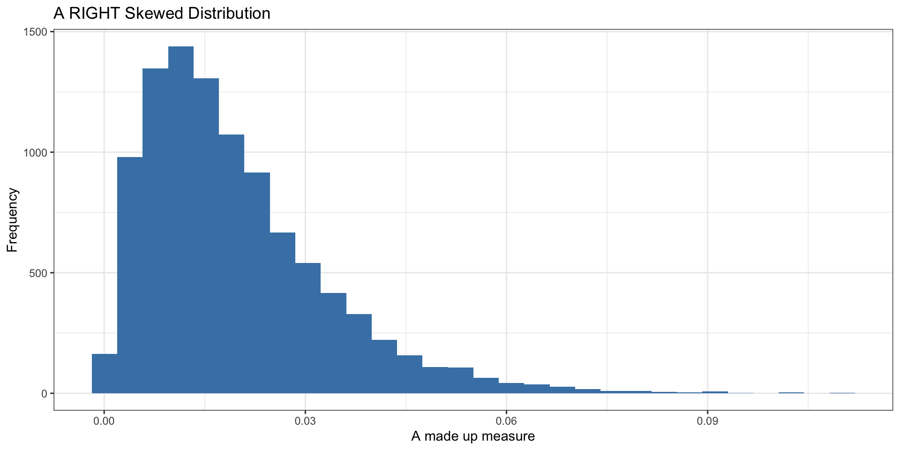
Bimodal Distribution
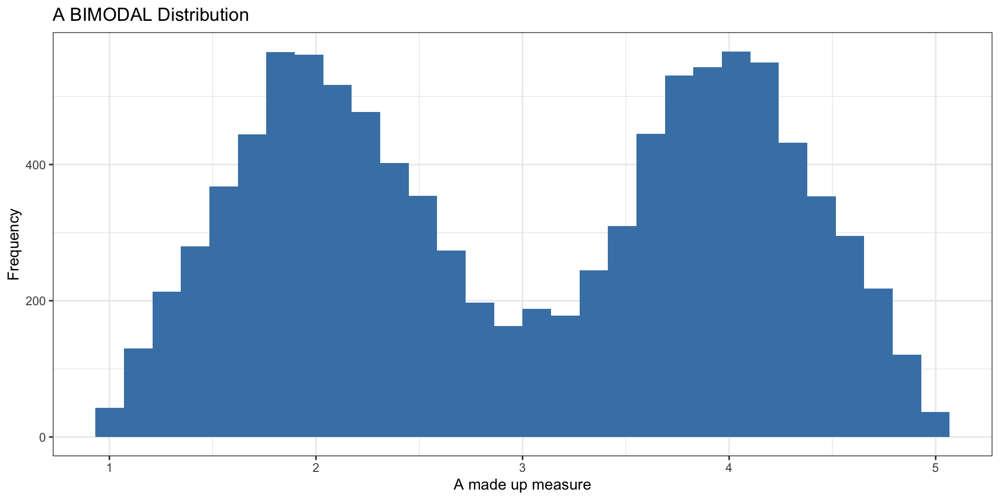
When is the Mean Useful?

When is the Mean Useful?
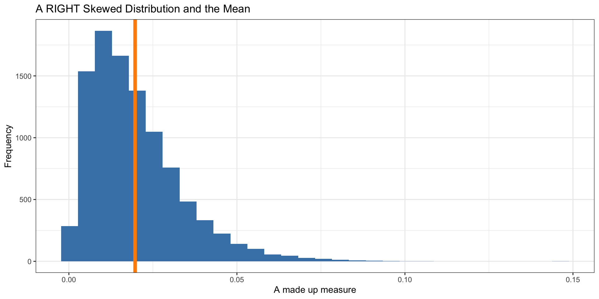
When is the Mean Useful?
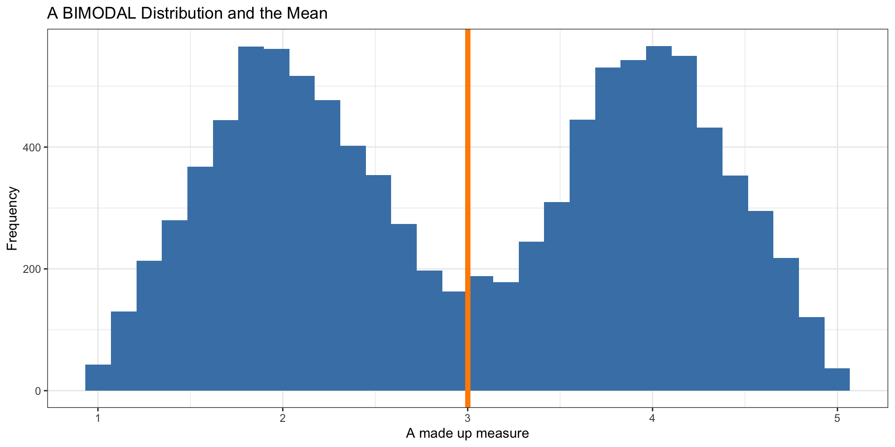
When is the mean useful?
- The Mean works well as a summary statistic when the distribution is relatively symmetric
- Not as well when distributions are skewed or bimodal (or multi-modal)
- With skewed distributions, the mean is sensitive to extreme values
- The median is more robust
Lesson
- Always look at your data!!
- When reading or in a presentation, ask yourself:
- Does the mean make sense given the distribution of the measure?
- Could extreme values in a skewed distribution make the mean not as useful?
- Have the analysts shown you the distribution? If not, ask about it!
Visualize Our Measure
Visualize Our Measure
mn <- mean(vdem2019$polyarchy)
med <- median(vdem2019$polyarchy)
ggplot(vdem2019, aes(x = polyarchy )) +
geom_histogram(binwidth = .05, fill = "steelblue") +
labs(
x = "Electoral Democracy",
y = "Frequency",
title = "Distribution of Electoral Democracy in 2019",
caption = "Source: V-Dem Institute"
) +
geom_vline(xintercept = mn, linewidth = 1, color = "darkorange") +
theme_minimal()Visualize Our Measure
mn <- mean(vdem2019$polyarchy)
med <- median(vdem2019$polyarchy)
ggplot(vdem2019, aes(x = polyarchy )) +
geom_histogram(binwidth = .05, fill = "steelblue") +
labs(
x = "Electoral Democracy",
y = "Frequency",
title = "Distribution of Electoral Democracy in 2019",
caption = "Source: V-Dem Institute"
) +
geom_vline(xintercept = mn, linewidth = 1, color = "darkorange") +
theme_minimal()Density Plots
- A density plot is a smoothed version of the histogram
- Useful for showing the shape of the distribution without choosing bin sizes
- Use
geom_density()in ggplot2
Density Plots
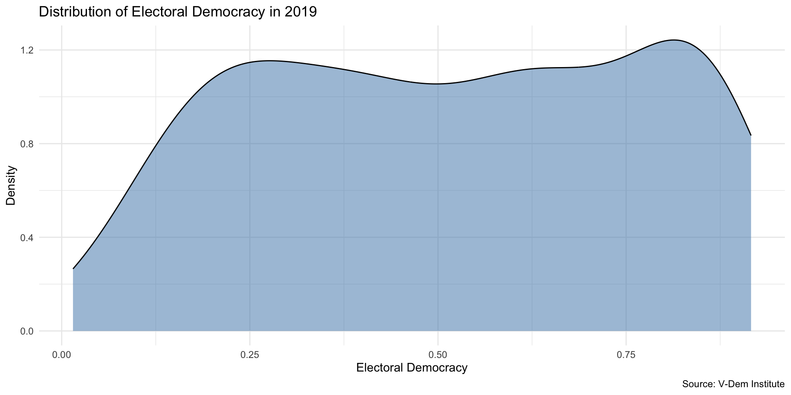
Histogram vs. Density Plot
Code
library(patchwork)
p1 <- ggplot(vdem2019, aes(x = polyarchy)) +
geom_histogram(fill = "steelblue", bins = 30) +
labs(x = "Electoral Democracy", y = "Count", title = "Histogram") +
theme_minimal()
p2 <- ggplot(vdem2019, aes(x = polyarchy)) +
geom_density(fill = "steelblue", alpha = 0.5) +
labs(x = "Electoral Democracy", y = "Density", title = "Density Plot") +
theme_minimal()
p1 + p2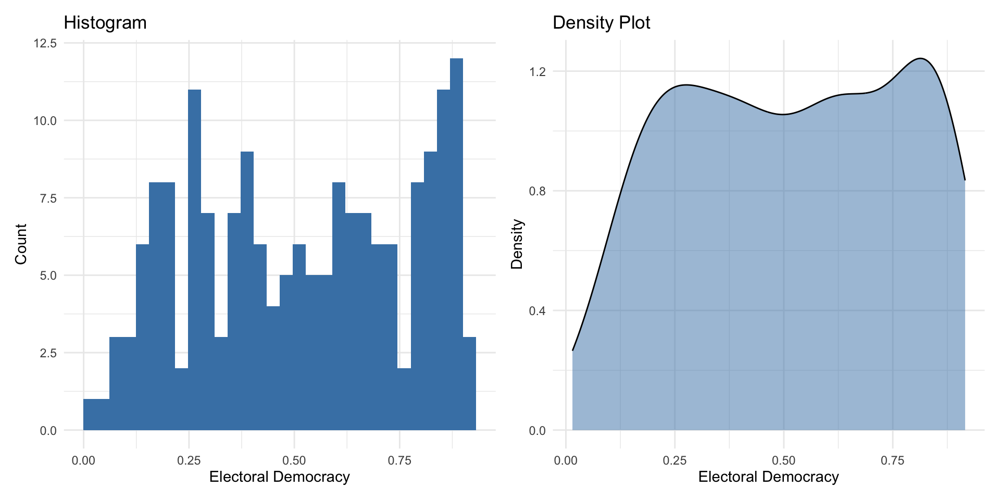
Your Turn!
- Look at the V-Dem codebook
- Select a different high-level measure of democracy
- Preprocess your data to include tha measure in your data frame
- Calculate the mean and median and store as a variable
- Visualize the distribution of the measure
- Include a vertical line for the mean
- Now try the median
Recap
- We can use statistics like mean or median to describe the center of a variable
- We can visualize the entire distribution to charachterize the distribution of the variable
- We should also say something about the spread of the distribution
Why Measure and Visualize Spread?

Measures of Spread: Range
- Range (min and max values)
- Not ideal b/c does not tell us much about where most of the values are located
Measure of Spread: Interquartile Range
IQR: 25th percentile - 75th percentile
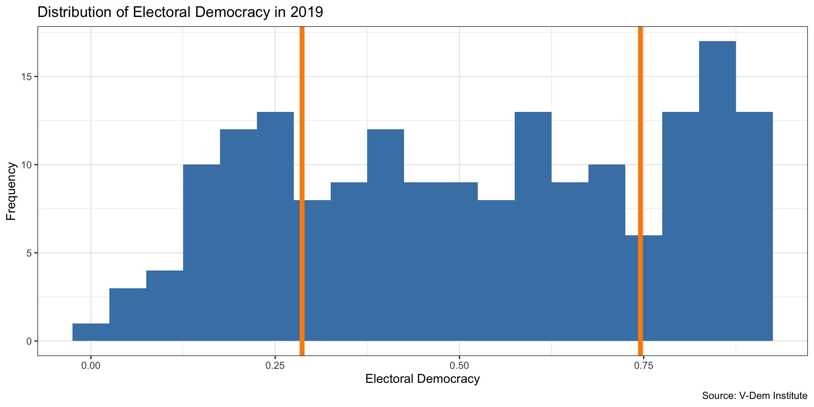
Interquartile Range
- The middle 50 percent of the countries in the data lie between 0.262 and 0.747
- The IQR (0.485) is the difference between the Q3 and Q1 values
- In a box plot, whiskers extend to the farthest point within 1.5 × IQR from the box edges
Box Plot
- A box plot visualizes the distribution using the median, IQR (the box), and whiskers
- Whiskers extend to the farthest point within 1.5 × IQR from the box edges
- Points beyond the whiskers are shown as individual outlier dots
Box Plot
Code
ggplot(vdem2019, aes(x = "", y = gdppc)) +
geom_boxplot(fill = "steelblue",
width = 0.4,
outlier.color = "darkorange",
outlier.size = 2) +
labs(
x = "",
y = "GDP per Capita (2011 USD)",
title = "Distribution of GDP per Capita in 2019",
caption = "Whiskers extend to 1.5 × IQR; dots are outliers\nSource: V-Dem Institute / Maddison Project"
) +
theme_minimal()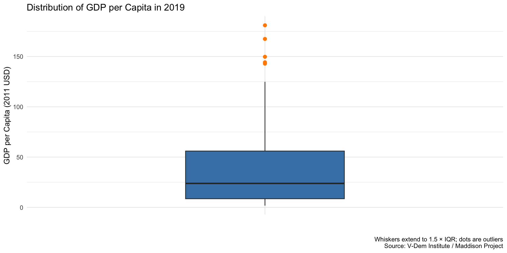
Measure of Spread: Standard Deviation
- Can think of it as something like the “average distance” of each data point from the mean
Standard Deviation
- A low standard deviation indicates that the values tend to be close to the mean
- A high standard deviation indicates that the values are spread out over a wider range
Starting with Variance
- Variance is a step towards calculating the standard deviation.
- It quantifies the average squared deviation of each number from the mean of the data set.
Calculating Deviation from the Mean
- First, calculate the mean (\(\bar{X}\)) of the dataset.
- For each data point (\(X_i\)), calculate its deviation from the mean: \[e_i = X_i - \bar{X}\]
- Example with a mean of 5:
- For a data point where \((X_i = 0): (0 - 5 = -5)\)
- For a data point where \((X_i = 10): (10 - 5 = 5)\)
- Example with a mean of 5:
Squaring the Deviations
- Squaring each deviation (\(e_i\)) to eliminate negative values: \[e_i^2 = (X_i - \bar{X})^2\]
- Summing up all squared deviations: \[\sum_{i=1}^{n} (X_i - \bar{X})^2\]
- This sum represents the total squared deviation from the mean.
Calculating the Variance
- Divide the total squared deviation by \((n-1)\) (to account for the sample variance): \[\text{Variance} = \frac{1}{n-1} \sum_{i=1}^{n} (X_i - \bar{X})^2\]
- Using \((n-1)\) ensures an unbiased estimate of the population variance when calculating from a sample.
Deriving the Standard Deviation
- The standard deviation is the square root of the variance: \[s = \sqrt{\frac{1}{n-1} \sum_{i=1}^{n} (X_i - \bar{X})^2}\]
- Taking the square root converts the variance back to the units of the original data.
Standard Deviation Simple Example
Standard Deviation Simple Example
Standard Deviation Simple Example
Standard Deviation Simple Example
Standard Deviation Simple Example
Your Turn!
- Calculate measures of spread for the
polyarchyvariable in the V-Dem data (mean, median, IQR, standard deviation) - How would you interpret these measures?
- Try a box plot for the
polyarchyvariable - Try another variable in the V-Dem data
- How does it compare to
polyarchy?
Calculating Statistics by groups
- What if we want to describe electoral democracy and see how it differs by some different variable? For example, by world region, or by year?
- In this case we want to combine numerical summaries with categorical variables
- This brings us back to bar chart
Calculating Statistics by Groups
- Let’s calculate the mean and median of electoral democracy in each world region
- For this, we add the group_by() to our previous code
vdem2019 |>
group_by(region) |>
summarize(mean_dem = mean(polyarchy),
median_dem = median(polyarchy))# A tibble: 6 × 3
region mean_dem median_dem
<chr> <dbl> <dbl>
1 Africa 0.425 0.395
2 Asia 0.455 0.429
3 Eastern Europe 0.550 0.595
4 Latin America 0.622 0.651
5 Middle East 0.257 0.257
6 The West 0.866 0.868Calculating Statistics by Groups
- Let’s store our statistics as a new data object, democracy_region
democracy_region <- vdem2019 |>
group_by(region) |>
summarize(mean_dem = mean(polyarchy),
median_dem = median(polyarchy))
democracy_region# A tibble: 6 × 3
region mean_dem median_dem
<chr> <dbl> <dbl>
1 Africa 0.425 0.395
2 Asia 0.455 0.429
3 Eastern Europe 0.550 0.595
4 Latin America 0.622 0.651
5 Middle East 0.257 0.257
6 The West 0.866 0.868Visualize using our Bar Chart Skills
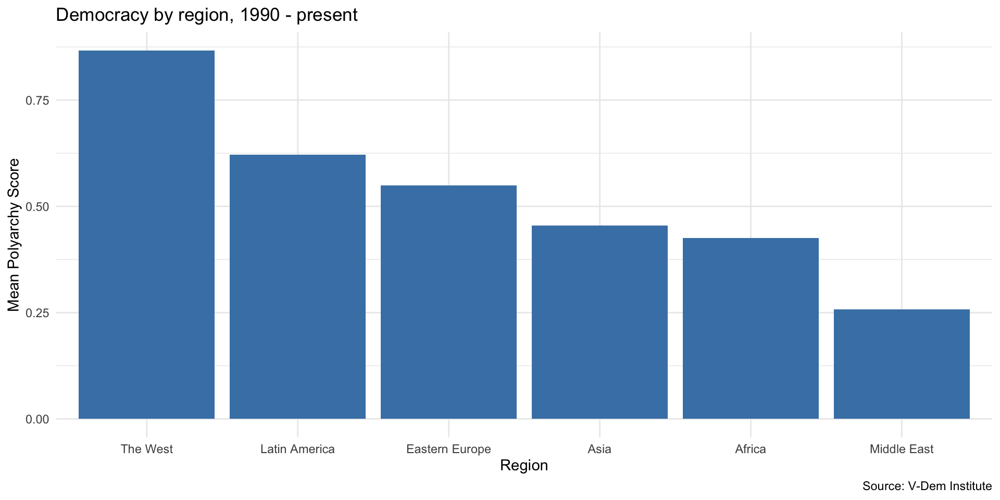
Numerical Variable by Group
How should we interpret this plot?
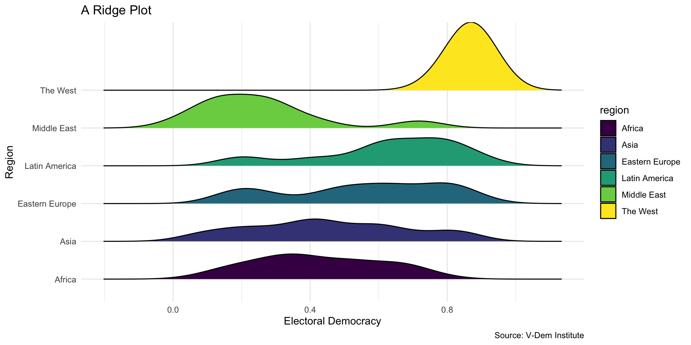
Your Turn!
- Make a bar chart summarizing
polyarchyor some other V-Dem variable - Now try your hand at a ridge plot